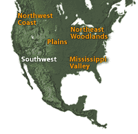

|

|
|
Zuni woman weaving a basket: Copyright © 1995-2001, The Denver Public Library
|
Making Vessels
In the Southwest as in other areas, the preparation and storage of food
required containers and vessels. Baskets have been woven for these purposes
in the Southwest for 8,000 years. Pottery has been made for well over
2,000 years. People decorated these functional objects with images of
their environment that were vital to them, like the sun that caused their
crops to grow, and the clouds, which were the source of life-giving rain.
The environment influenced not only the decoration of objects but also
the order of many of the people's ceremonial and daily activities.
|
| |
The Native People
Some Southwest groups of native people are known as Pueblo, from the Spanish
word for town, because of the multi-unit adobe
dwellings in which they lived. Today, many of the Pueblo people live much
as their ancestors did along the Rio Grande River in New Mexico. The Hopituh
(Hopi), who occupy the mesa country of northeastern Arizona and the Zuni,
who live in west-central New Mexico, are Pueblo people. The Akimel O'odham
(Pima) and the Tohono O'odham (Papago) were traditionally farmers who
lived on irrigated land along the Gila River in southern Arizona. While
most of the Southwestern people trace their origin to the ancient inhabitants,
the Diné (Navajo) and Inde (Apache) are relative newcomers who
migrated from their homeland in northwestern Canada sometime around 1400.
More about the Southwest Indians.
|